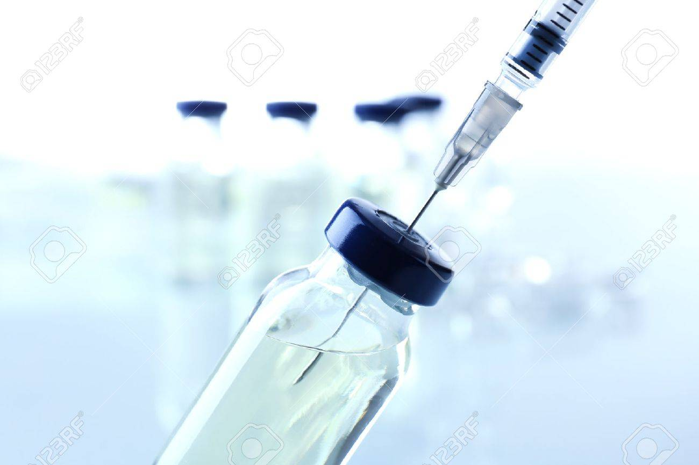
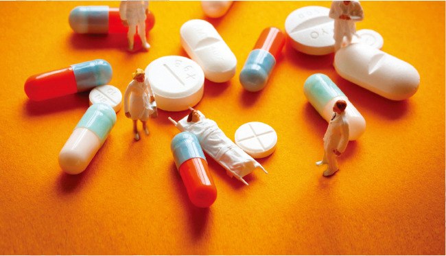
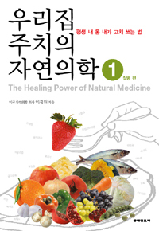

질병과 백신, 내몸 내가 고쳐쓰는 법
내 몸과 약
-
약 이야기
- 믿음, 비타민, 약과 독, 진통제, 마취
easy
- 플라시보 효과 믿음의 약, 비타민과 약과 독의 두 얼굴, 고마운 진통제 이자 마약, 혁신적 진보를 가져온 마취제, 수많은 생명을 구한 소독제, 백신등의 이야기.
-

두 얼굴의 백신
- 백신의 의심과 불신의 역사
usually
- "디프테리아, 백일해, 파상풍, 결핵, 콜레라, 소아마비, 황열, 말라리아, 자궁경부암. . . 질병 예방과 부작용 우려 사이, 백신 논쟁의 모든 것"
-

안티백신 운동
- 안티백신 운동이 과학적이지 않은 이유
little difficult
- 백신을 맞느니 감옥에 가겠다, 백신을 거부하는 사람들. 백신 반대 시위에는 8~10만명의 군중이 참여하여 반대했지만 그 결과는. . .
-
탈리도마이드
- 탈리도마이드가 죽인 아이들
little difficult
- 탈리도마이드로부터 수많은 생명을 구한 켈시 박사와 피해자들.임산부가 약을 먹을 때 조심해야할 시기.
-
무병장수
- 슈퍼푸드, 건강기능식품 그리고 약, 인간의 수명은 어디까지.
difficult
- 2018년 120시대. 인간의 평균수명은 몇 살 까지 늘어날까? 건강하게 오래 살려면 어떤 것을 먹고 먹지 말아야 하는 걸까?
-

자연의학
- 평생 내 몸 내가 고쳐 쓰는 법
difficult
- 평생 병원 약을 먹으며 살아야 하는 건가? 수술 뒤 재발되지 않고 완치되는 방법은 없을까? 병을 예방하는 방법?